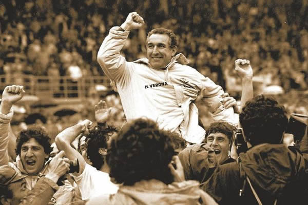

L'estate 1984 segnò in casa gialloblu gli acquisti di stranieri emersi durante il recente Europeo, il tedesco Briegel e il danese Elkjær Larsen.Pur disponendo di un organico numericamente ristretto, il tecnico Bagnoli registrò un felice inserimento dei nuovi innesti nella formazione-base. A difesa dei pali agiva Garella, con la retroguardia imperniata sui laterali Ferroni e Marangon: leader del pacchetto arretrato era il libero Tricella, con Fontolan schierato da centrale.Di Gennaro costituiva il punto di riferimento a centrocampo, con Volpati e Briegel — di cui Bruni rappresentava il primo cambio a completare la mediana; in avanti l'ala Fanna appoggiava le punte Elkjær Larsen e Galderisi, risultati a fine stagione i migliori realizzatori della squadra. Pur a fronte delle insidie proposte in avvio dal calendario, gli scaligeri — a punteggio pieno nel mese di settembre — uscirono indenni dalle trasferte con Inter e Roma imponendosi invece a domicilio contro Juventus e Fiorentina: a siglare il definitivo raddoppio sui bianconeri fu l'attaccante danese, con la rete rimasta celebre per via dello scarpino perso dal giocatore durante l'azione che portò al gol. Espugnato il campo di un Torino capace di contendere a sorpresa il primato agli uomini di Bagnoli, un lieve rallentamento non precluse l'inedita conquista del titolo invernale: il giro di boa fu concluso dalla sconfitta di misura con l'Avellino. Sul principio della tornata conclusiva i milanesi operarono un effimero aggancio, coi veneti nuovamente da soli in testa nel mese di febbraio. Giunta ad accumulare in primavera un vantaggio di 4 lunghezze sulla compagine di Castagner, la formazione conobbe l'unico altro passo a vuoto del proprio torneo inciampando in casa per mano dei granata: mentre al gruppo delle inseguitrici si aggiunsero Sampdoria e Juventus, a porre un'ipoteca sul titolo fu la vittoria contro la Lazio che certificò l'aritmetica retrocessione di quest'ultima. Il primo titolo di massima serie della storia scaligera recò quindi la data del 12 maggio 1985, dopo un pari sul terreno dell'Atalanta che assicurò la vittoria del campionato con 90' di anticipo: impostosi a danno degli irpini nel turno finale, il Verona terminò la stagione con 43 punti sopravanzando un Torino che fece sua la seconda posizione a −4 dai gialloblu. In Coppa Italia la squadra — dopo un'agevole qualificazione nella fase a gruppi — eliminò il Genoa negli ottavi di finale, per poi arrendersi all'Inter nel turno successivo.
«Oggi non ci rendiamo conto di quale impresa abbiamo realizzato, ma sarà il corso del tempo a farcelo capire.»
| GIOCATORE | PRESENZE | GOL |
|---|---|---|
| 1. Giuseppe Galderisi | 29 | 11 |
| 2. Hans-Peter Briegel | 27 | 9 |
| 3. Preben Elkjær Larsen | 23 | 8 |
| 4. Antonio Di Gennaro | 29 | 4 |
| 5. Pierino Fanna | 29 | 2 |
| 6. Luciano Marangon | 29 | 2 |
| 7. Silvano Fontolan | 28 | 1 |
| 8. Luciano Bruni | 27 | 1 |
| 9. Luigi Sacchetti | 23 | 8 |
| 10. Roberto Tricella | 30 | 0 |
| 11. Domenico Volpati | 30 | 0 |
| 12. Mauro Ferroni | 20 | 0 |
| 13. Franco Turchetta | 16 | 0 |
| 14. Dario Donà | 12 | 0 |
| 15. Fabio Marangon | 3 | 0 |
| 16. Sergio Spuri | 1 | 0 |
| 17. Antonio Terracciano | 0 | 0 |
| 18. Claudio Garella | 29 | -19 (subiti) |